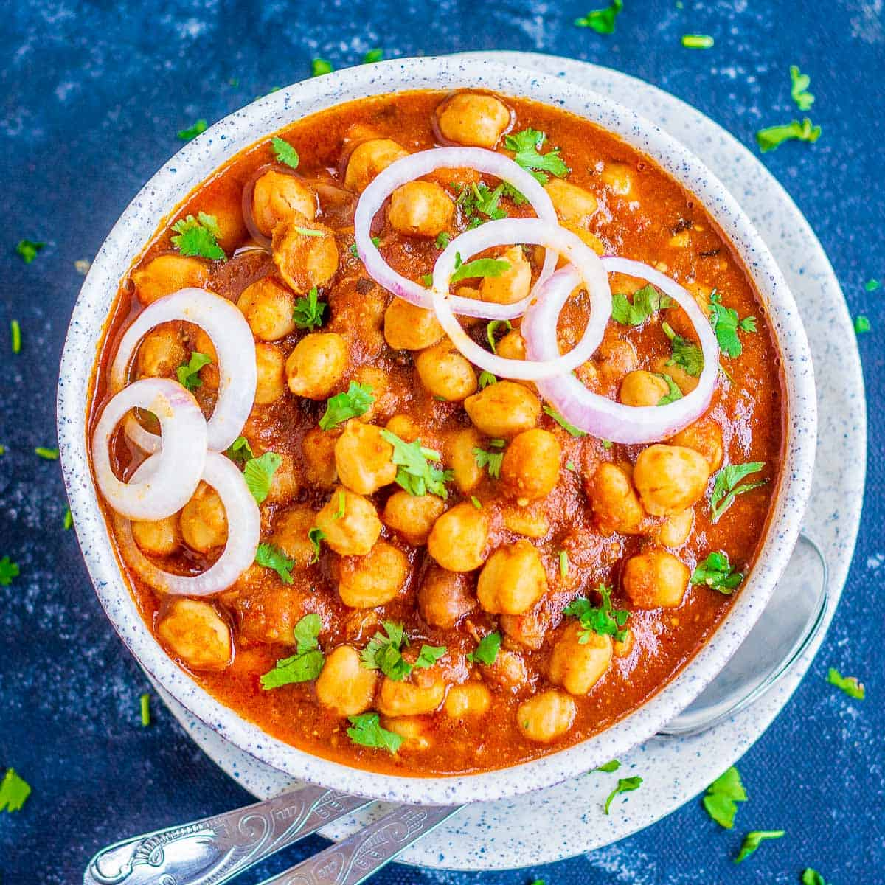

Chana Masala is a dish of chickpeas in a spiced sauce.

Ingredients
For Pressure Cooking :
1 cups Chickpea/Chana
For SoakingWater
1/4 TspBaking Soda
3/4 TspSalt
3 CupWater(For Pressure Cooking)
For Chana Masala Powder :
1/4 cupCoriander Seeds
1/4 cupCumin/Jeera
2 TspPepper
1 tspClove
2 podBlack Cardamom
2 InchCinnamon
1Mace/Javitri
1 TspFennel/saunf
1 TspShah Jeera/Caraway seed
10Dried red chilli
1 TspShah Jeera/Caraway seed
2 TbspAamchur
2 TbspKasuri Methi
1 TspTurmeric
For Curry :
2 TbspGhee
3 podCardamom
1Bay Leaf
1 TspCumin/Jeera
1Onion(Finely Chopped)
1Chilli(Slit)
1 TspGinger garlic paste
1/2 TspSalt
2 CupTomato Puree
2 TbspCoriander(Finely Chopped)
Preparation
Pressure Cooking Chana :
firstly, in a large bowl take 1 cup chickpea and soak in enough water for 8 hours.
transfer the soaked chickpea to a pressure cooker.
add ¼ tsp baking soda, ¾ tsp salt and 3 cup water.
pressure cook for 5 to 6 whistles or until the chana is cooked well.
Chana Masala Powder preparation :
firstly, in a pan take ¼ cup coriander seeds, ¼ cup cumin, 2 tsp pepper, 1 tsp clove, 2 pod black cardamom, 2 inch cinnamon, 1 mace, 1 tsp fennel, 1 tsp shah jeera.
roast on low flame until the spices turn aromatic.
further add 10 dried red chilli and roast until the chilli puffs up and turns crunchy.